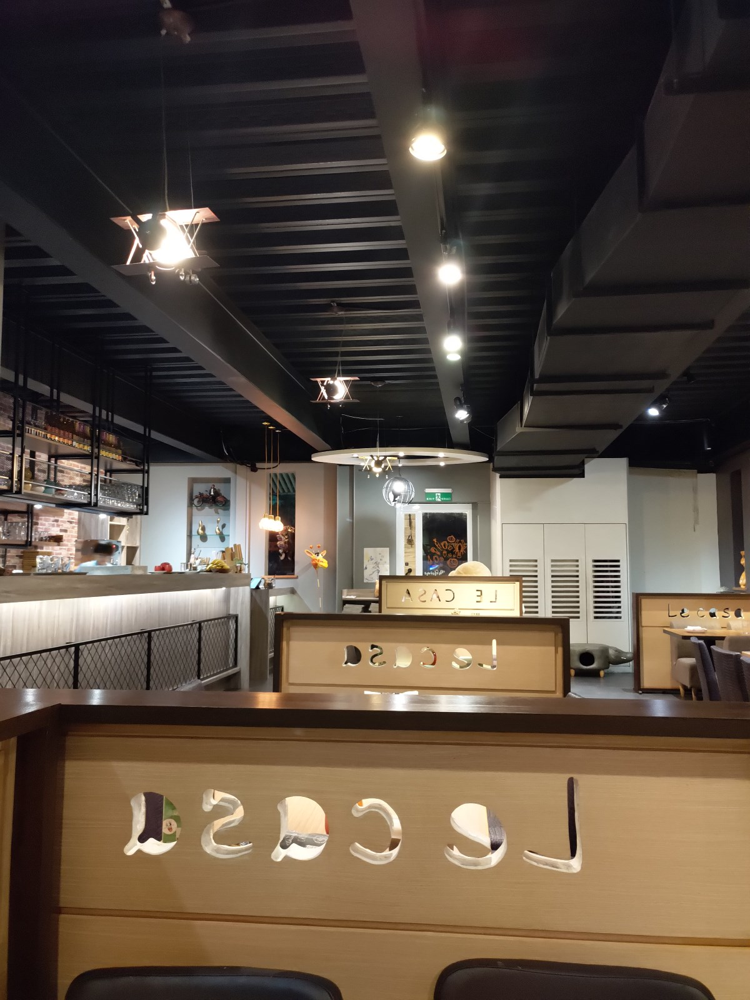

[竹北] 畫盒子藝術餐廳
| 餐廳名稱: | 畫盒子藝術餐廳 |
|---|---|
| 地 址: | 新竹縣竹北市莊敬北路268號 |
| 營業時間: | 週二~周五 11:00~14:00 17:00~21:00 |
| 週六~週日 11:00~21:30 午茶時段不提供正餐 |
幾年前來過一次 畫盒子藝術餐廳，印象還不錯，今天不知道吃什麼晚餐， 查到它可能有貓，就再來一次。似乎裝潢有改，改得比以前更好了。這是從座位 向門口拍的照片，沒錯，今天不是週末，客人大概坐一半吧。 
剛進大門，左手邊的擺設。
角落玻璃櫃，專門讓貓玩的空間，可是竟然沒貓，生氣。
很豐富的菜單。 前面一堆分享餐，聽說份量都非常大，今天人少，沒法點了。
畫盒子藝術餐廳 的 Facebook 粉絲頁，有放高解析度的菜單，可能看那邊
的菜單會比較清楚。

沒很餓，點了 明太子白醬燻鮭魚鮮蝦干貝墨魚麵，只加了一份99元 的 麵包與湯。 麵包頗熱，塗奶油或沾湯吃，都好吃。 湯 意外的覺得很好喝，雖然是很常見的奶油蘑菇湯。
明太子白醬燻鮭魚鮮蝦干貝墨魚麵，還不錯啦，只是我是重口味的人，覺得鹹一點比較好吃， 也沒看到鹽罐，胡椒罐可以加強調味。所幸燻鮭魚夠鹹，就默默接受了。
打卡送雞翅，店主蠻大方的，只有跟服務生說等食物照片齊了，會打卡。 它就先做了，沒檢查是否有打卡，而且看兩位客人就送兩隻。不過我當然有打卡。
黑松露森林牛肝蕈菇燉飯。也是很正常的味道，也是不錯吃。
最後要走的時候，才看到貓，好可愛喔。可惜算是怕生的貓，沒辦法接近。
食物的味道，當然沒到 義大利紅蝦評鑑 那些水平，只是那些水平，也不會只賣這個價格， 基本上我覺得食物的份量，味道，價格 算有平衡。需要聊天，玩貓的客人，可以來這間 畫盒子藝術餐廳。